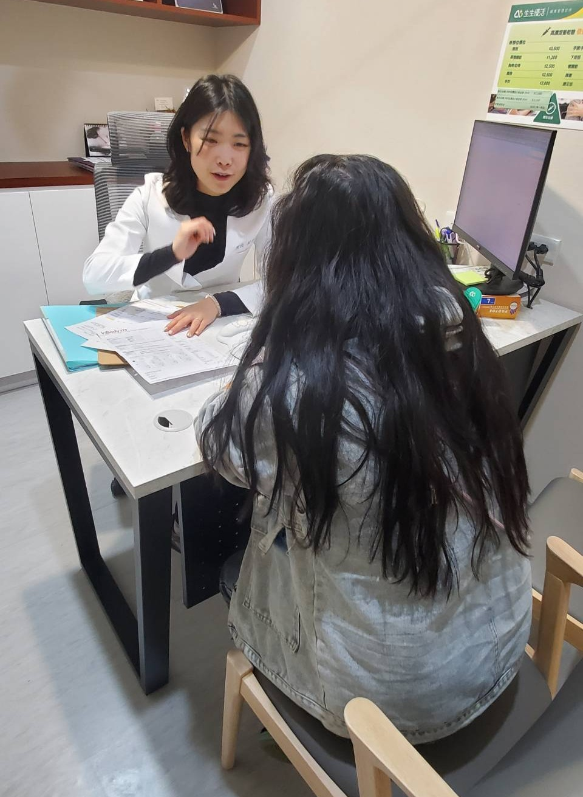

專業減重門診，讓產後婦女擺脫復胖困擾，找回健康與自信

林小姐的減重旅程，就像一場反覆上演的鬧劇，生完小孩後努力甩掉了幾公斤，沒多久卻又復胖回來。產後的她，嘗試過各種減肥方式，像是168斷食、低碳飲食，每次剛開始都覺得有效，但不是撐不了太久、食慾大爆發，就是搞得自己氣色變差、精神萎靡，根本沒辦法長期維持。
就在她感到迷惘的時候，朋友的一句話點醒了她：「與其自己瞎試，不如交給專業的吧！」於是，她踏入生生優活營養與減重門診，希望這次能徹底擺脫復胖困擾，迎接真正的改變！
專業醫療減重：健康管理勝過極端節食

在諮詢時，醫師詳細分析了她的減重歷程，並耐心解釋各種減重方法的原理與潛在風險，讓她明白，減重不該只是短期「撐過去」，而是需要透過科學化的健康管理，找到適合自己的長期維持方式。
營養師進一步評估她的飲食習慣與生活作息，發現她雖然吃的不多，但因為長期依賴速食，導致營養不均衡，並且影響代謝功能。為了找出真正影響體重的關鍵問題，營養師建議她進行抽血檢查，確認是否有內分泌或代謝異常的狀況，而不是單純地「少吃多動」。這種量身打造與陪跑的減重策略，讓林小姐感受到專業的細膩與貼心。
從「減重」到「健康管理」，真正的改變開始了！
透過醫師與營養師的專業指導下，林小姐開始調整飲食結構，學習如何在不極端節食的情況下，讓身體獲得足夠的營養，並搭配適合的運動與生活習慣調整，讓減重變得更輕鬆且可持續。
現在的她，不僅體重逐漸穩定下來，皮膚狀況與精神狀態也明顯改善，最重要的是，她對自己的身體有了更深的了解，也學會了如何與它和平共處。她笑著說：「減重不再是痛苦的循環，而是一種讓自己變得更好的過程，這才是最棒的收穫！」